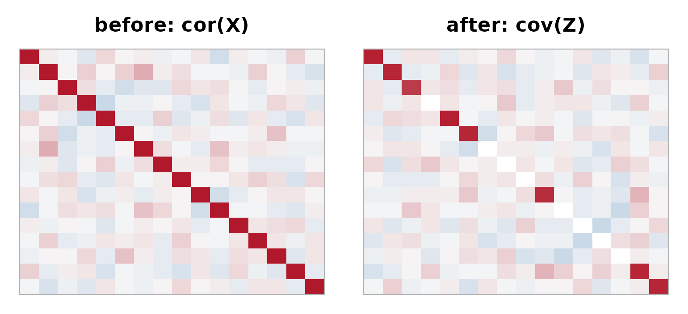
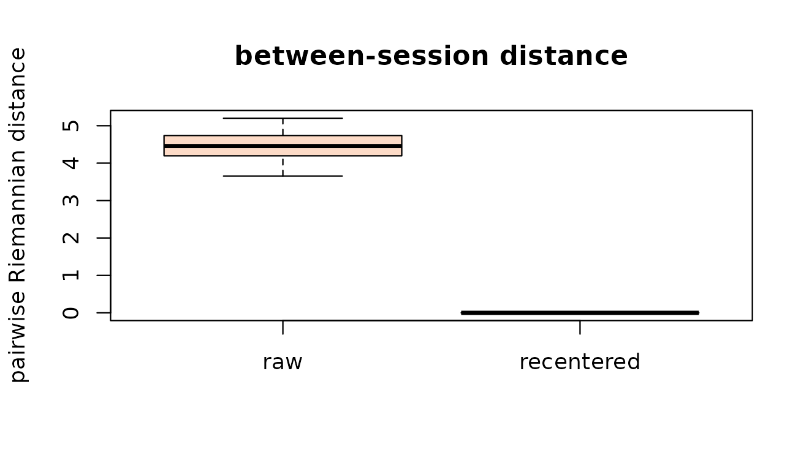

Overview
eegwhiten provides covariance whitening and
covariance-based transfer-learning tools for EEG and other multichannel
signals. The core is a model-based fit/transform workflow:
- Rows are trials/epochs/samples; columns are channels/features.
- Fit once on training data, then apply to new data.
- Six whitening methods, covariance shrinkage, robust estimators, dimensionality reduction, and cross-validated tuning.
On top of whitening it adds the pieces needed for cross-session / cross-subject work: Euclidean alignment and per-domain recentering, Riemannian tangent-space mapping, and generalized-eigenvalue (“relative”) whitening.
Quick start: fit, transform, invert
X_train <- matrix(rnorm(300 * 16), 300, 16)
X_test <- matrix(rnorm(120 * 16), 120, 16)
colnames(X_train) <- paste0("Ch", 1:16)
colnames(X_test) <- colnames(X_train)
m <- whiten_model(X_train, method = "PCA", var_threshold = 0.95, lambda = "auto")
print(m)
#> <whiten_model>
#> method : PCA
#> dimensions : 16 -> 16
#> n_comp : 16
#> var_threshold: 0.95
#> explained_var: 1
#> lambda : 1
#> shrink_target: identity
#> eig_method : auto
#> fast_mode : FALSE
#> cov_estimator: empirical
#> weighted_fit: FALSE
#> n_obs : 300
#> updates : 0
#> lambda_mode :auto (oas)
Z_test <- predict(m, X_test)
dim(Z_test)
#> [1] 120 16
# Inverse transform (note: model-first argument order)
X_rec <- unwhiten(m, Z_test)
dim(X_rec)
#> [1] 120 16Diagnostics
After whitening, cov(Z) should be close to the identity.
check_whitening() reports several measures, including a
bounded whiteness score in [0, 1].
d <- check_whitening(predict(m, X_train))
c(diag_mean = d$diag_mean, offdiag_frob = d$offdiag_frob,
whiteness = d$whiteness, logdet = d$logdet)
#> diag_mean offdiag_frob whiteness logdet
#> 1.0000000 0.8378828 0.7824632 -0.3792011Visually, the strong off-diagonal correlation structure of the input is removed:
par(mfrow = c(1, 2), mar = c(1, 1, 2.5, 1))
heat(cor(X_test), "before: cor(X)")
heat(cov(predict(m, X_test)), "after: cov(Z)")
Whitening methods
| Method | Description | Dim. reduction |
|---|---|---|
| PCA | Eigen-decomposition based | Yes |
| PCA-cor | PCA on correlation (scale-invariant) | Yes |
| SVD | Singular value decomposition | Yes |
| ZCA | Zero-phase, closest to original data | No |
| ZCA-cor | ZCA on correlation | No |
| Cholesky | Cholesky factorization | No |
Regularization and shrinkage targets
Covariance shrinkage stabilizes whitening for high-dimensional /
low-sample data. lambda = "auto" chooses the intensity with
OAS or Ledoit-Wolf. The target is a scaled identity by default, or
"diagonal" to shrink correlations toward zero while
preserving each channel’s variance.
m_auto <- whiten_model(X_train, method = "ZCA", lambda = "auto", lambda_method = "oas")
m_auto$lambda
#> [1] 1
m_diag <- whiten_model(X_train, method = "ZCA", lambda = 0.3, shrink_target = "diagonal")
m_diag$shrink_target
#> [1] "diagonal"Robust covariance estimators ("tyler", and
"mcd" with robustbase) are available via
cov_estimator.
Spatial filters and patterns
The whitening filters (rows of W) and the corresponding
forward patterns are both available. Patterns – not raw filter weights –
are the right object to interpret as scalp topographies (Haufe et al.,
2014).
fp <- whitening_patterns(whiten_model(X_train, method = "PCA", n_comp = 4))
dim(fp$filters) # components x channels
#> [1] 4 16
dim(fp$patterns) # channels x components
#> [1] 16 4Hyperparameter tuning
auto_tune_whitening() cross-validates over methods and
parameters and returns a tuned object you can predict with directly.
tuned <- auto_tune_whitening(
X_train, methods = c("PCA", "ZCA"),
n_comp_grid = c(8, 12), lambda_grid = list("auto", 0.1),
cv_folds = 3, seed = 123, top_n = 4
)
print(tuned)
#> <whiten_tune>
#> scoring : unsupervised
#> cv_folds : 3
#> best method : PCA
#> best n_comp : 8
#> best lambda : 0.1
#> best cov_est: empirical
#> top 4 configurations:
#> method n_comp var_threshold lambda cov_estimator mean_score sd_score
#> PCA 8 NA 0.1 empirical -0.8503463 0.1056367
#> PCA 12 NA 0.1 empirical -1.1336164 0.2216557
#> PCA 8 NA auto empirical -1.1809458 0.6216179
#> PCA 12 NA auto empirical -1.4801419 0.6928170
#> n_success
#> 3
#> 3
#> 3
#> 3
Z <- predict(tuned, X_test) # uses the best model
dim(Z)
#> [1] 120 8Cross-session / cross-subject transfer
Independent per-matrix whitening removes the very between-session
covariance structure transfer learning needs. eegwhiten
offers alignment instead.
Per-domain recentering (recenter())
aligns each session by its own covariance, mapping every domain
to the identity – the Euclidean Alignment idea of He and Wu (2019):
X_list <- list(
matrix(rnorm(200 * 8), 200, 8),
matrix(rnorm(180 * 8), 180, 8) %*% diag(1:8) # a shifted session
)
out <- whiten_batch(X_list, mode = "recenter")
round(diag(cov(out[[2]]$Z)), 3) # each domain -> identity
#> [1] 1 1 1 1 1 1 1 1Across several drifting sessions, recentering collapses the between-session Riemannian distances toward zero:
sessions <- lapply(1:6, function(s) {
S <- crossprod(matrix(rnorm(64), 8, 8)) + diag(8)
matrix(rnorm(200 * 8), 200, 8) %*% chol(S * runif(1, 0.5, 2))
})
pair_d <- function(cl) {
d <- c(); k <- length(cl)
for (i in 1:(k - 1)) for (j in (i + 1):k) d <- c(d, riemann_distance(cl[[i]], cl[[j]]))
d
}
raw <- pair_d(lapply(sessions, cov))
rc <- pair_d(lapply(whiten_batch(sessions, mode = "recenter"), function(o) cov(o$Z)))
boxplot(list(raw = raw, recentered = rc), ylab = "pairwise Riemannian distance",
col = c("#FDDBC7", "#2166AC"), main = "between-session distance")
Euclidean alignment
(euclidean_alignment()) instead builds one shared transform
from a grand-mean covariance:
ea <- euclidean_alignment(X_list, input = "raw", mean_method = "logeuclid")
str(ea$aligned, max.level = 1)
#> List of 2
#> $ : num [1:200, 1:8] -1.196 -0.572 0.591 1.129 0.689 ...
#> $ : num [1:180, 1:8] 0.566 -1.6467 1.492 -0.0236 -1.0221 ...At predict time, self_center = TRUE centers test data on
its own mean, which helps when the test session has drifted relative to
training:
m_tr <- whiten_model(X_list[[1]], method = "ZCA", lambda = 0.1)
Z_drift <- predict(m_tr, X_list[[2]], self_center = TRUE)
dim(Z_drift)
#> [1] 180 8Riemannian tangent space
The standard Riemannian BCI pipeline projects per-trial covariance
matrices to the tangent space at a reference mean and vectorizes them,
so ordinary linear classifiers can be used.
epoch_covariances() builds the covariances from a trial
tensor; tangent_space() maps them.
X_tensor <- array(rnorm(40 * 8 * 128), dim = c(40, 8, 128))
covs <- epoch_covariances(X_tensor, lambda = 0.05)
V <- tangent_space(covs, mean_method = "riemann")
dim(V) # 40 trials x p(p+1)/2 features
#> [1] 40 36
covs_rec <- untangent_space(V) # inverse map
max(abs(covs_rec[[1]] - covs[[1]]))
#> [1] 3.330669e-15Riemannian distances, means, and barycenter whitening
The geometry primitives behind alignment are available directly.
spd_mean() computes the geometric (Riemannian),
log-Euclidean, or arithmetic mean of a set of covariances;
riemann_distance() gives the affine-invariant distance; and
barycenter_whitener() fits a whitener that maps the
geometric mean of a set of covariances to the identity.
M <- spd_mean(covs, metric = "riemann")
riemann_distance(covs[[1]], M)
#> [1] 0.7281765
bw <- barycenter_whitener(covs, metric = "riemann")
Z_bw <- predict(bw, matrix(rnorm(100 * 8), 100, 8))
dim(Z_bw)
#> [1] 100 8lambda = "auto" also works with
shrink_target = "diagonal" (a scale-invariant
Schaefer-Strimmer intensity), and with "auto" inside
epoch_covariances() for per-epoch shrinkage.
Relative / generalized-eigenvalue whitening
whiten_relative() whitens one covariance by a reference
covariance and diagonalizes the target – the building block of CSP and
xDAWN. The returned values are the per-component variance
ratios.
Online updates with forgetting
whiten_model_update() refreshes a model from summary
moments. A decay < 1 down-weights past data to track
non-stationary drift in streaming settings.
X_new <- matrix(rnorm(80 * 16), 80, 16)
m2 <- whiten_model_update(m, X_new, decay = 0.9)
m2$n_obs
#> [1] 380Tensor data
3D EEG tensors (trials x channels x time) are handled directly.
m_t <- whiten_model_tensor(X_tensor, method = "ZCA", lambda = 0)
Z_t <- predict_tensor(m_t, X_tensor)
dim(Z_t)
#> [1] 40 8 128
X_t_rec <- unwhiten_tensor(m_t, Z_t)
dim(X_t_rec)
#> [1] 40 8 128Reporting
txt <- report_whitening(m, data = X_train, file = NULL)
cat(substr(txt, 1, 280), "...\n")
#> # Whitening Report
#>
#> - Generated at: 2026-06-29 20:11:10 UTC
#> - Method: PCA
#> - Dimensions: 16 -> 16
#> - n_comp: 16
#> - var_threshold: 0.95
#> - explained_var: 1
#> - lambda: 1
#> - lambda_input: auto
#> - lambda_method: oas
#> - shrink_target: identity
#> - cov_estimator: empirical
#> - sample_weighted: FAL ...References
- He, H., and Wu, D. (2019). Transfer learning for brain-computer interfaces: A Euclidean space data alignment approach. IEEE TBME.
- Barachant, A., et al. (2012). Multiclass brain-computer interface classification by Riemannian geometry. IEEE TBME.
- Haufe, S., et al. (2014). On the interpretation of weight vectors of linear models in multivariate neuroimaging. NeuroImage.